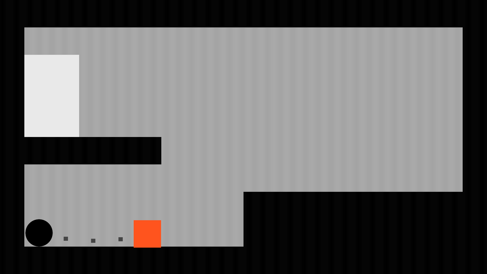

CURSE.or (BRGD 2021)
In this game, you control a mouse cursor that encircles enemies with its trail to score points and extend the time limit. I primarily worked on this project as a programmer.
Sheep Toss (BRGD 2020)
Sheep Toss is a rhythm game that involves, as you may guess, tossing sheep! Hitting the correct keys along with the beat determines how far you'll be able to launch the sheep. I led most of the programming work on this project as part of the Brown RISD Game Developers club.

Devil's Dice (Mini Jam 83: Dread)
Devil's Dice is my most recent game made for a game jam. I developed the entire game within a 72 hour time limit. As part of the rules of the game jam, I had to incorporate dice into the project, so I made a dungeon crawler where dice act as a health system. Overall, I am very proud of how this game turned out, and will likely return to work on it in the near future!

Mosquito Graffiti (MashUp Game Jam 2)
Mosquito Graffiti is the second game jam game I worked on. The theme for te 72-hour game jam was "unconventional means," so my concept for this game was trying to paint graffiti by swatting mosquitos against a wall. Although I did not polish the game as much as I would have liked, I had fun trying out exploring this idea for a game!

Ball and Chain Parkour (GMTK Game Jam 2021)
This was the first game jam game I worked on! Ball and Chain Parkour is a fast-paced 2D platformer, where the player is attached to heavy ball and chain that they can throw to move around. I gained a lot of experience working under both time and design constraints (the game jam's theme was "joined together" and had a 48 hour time limit).